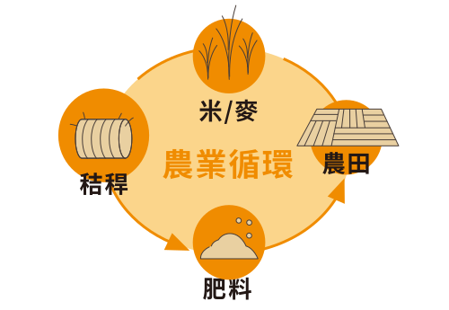
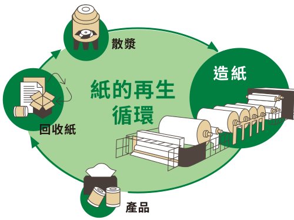
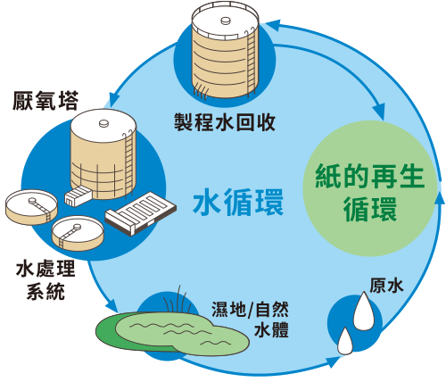

永豐餘
全循環經濟
之實踐
以循環經濟實踐永續商業模式

農業循環

以農業副產品製漿造紙全循環利用，替代森林資源。
紙的再生循環

使用永續FSC紙漿，工紙回收紙比例達97%，無淋膜食安用紙能直接進入紙回收系統循環再利用。
水循環

水在密閉系統不斷循環使用，製程用水重複利用率最高達98%。
再生能源循環

造紙製程發展出台灣最大的生質能場域，包含木質素發電、規模最大的沼氣發電及全台第一座SRF零燃煤汽電共生鍋爐。
碳循環
光合作用將碳儲存形成木材組織，紙品以農林植物纖維為原料，具有纖維固碳的特殊性。永豐餘兩岸植林面積超過3萬公頃，合計固碳量約 2,909,708 TCO2e。